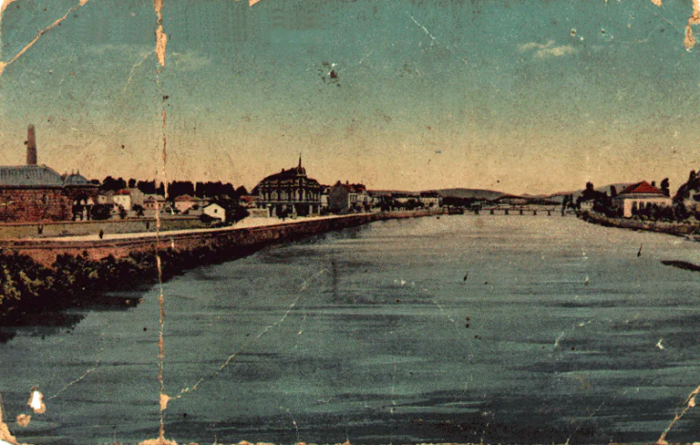
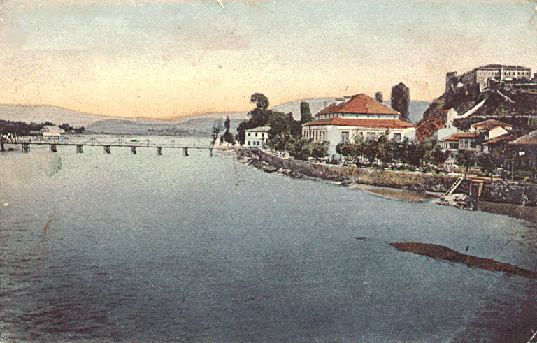
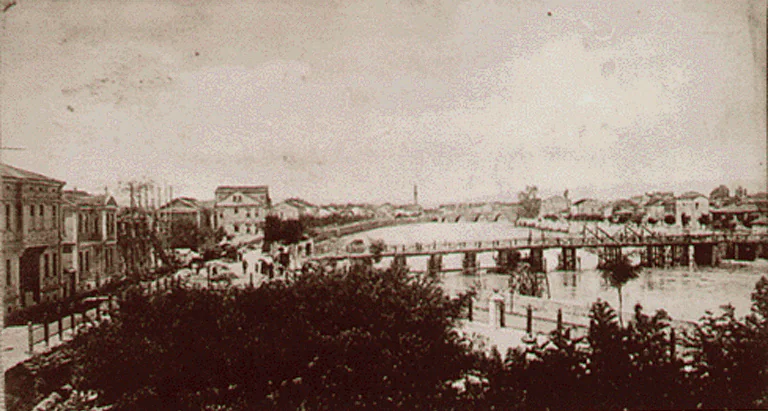
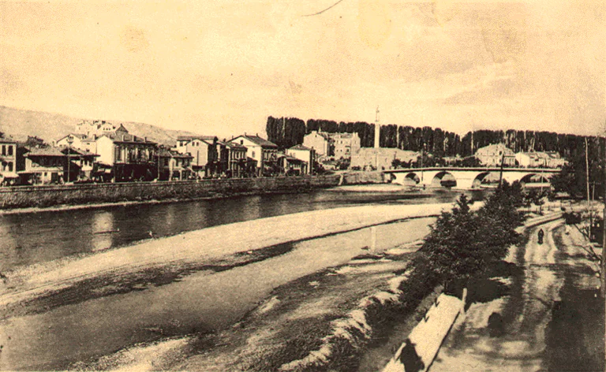

На реката Вардар
- Сценарио
- Димитрие Османли, Симон Дракул
- Камера
- Киро Билбиловски
- Година
- 1964
- Должина
- 00:16

Кејот "13 Ноември" - 1888 година.

Воденица во горниот тек на р.Вардар - крај на 19 век.

Иако оваа разгледница е многу оштетена сепак влезе во оваа колекција бидејќи потекнува од крајот на 19 век и почетокот на 20 век, и може да се забележат некои објекти кои ги има само на оваа разгледница. Десно е Отоманска банка. Во преден план е стариот чинар на кој бил обесено мртвото тело на Карпош 1689 година. Над него се извишува скопската тврдина - Кале. Сосема на лево се гледа дел од Камениот мост.

Поглед на двата кеја на р. Вардар - почеток на 20 век.

Скопје 1902 година - поглед од Камениот мост кон дрвениот мост. Реката Вардар е со изградени кејски ѕидови. Се забележуваат стамбени и јавни објекти. На десната страна, од фотографијата, се забележува турскиот театар, а на левата, на самиот почеток, е Бурмали џамија. Во заден план е објектот на банката и старата пошта.

Поглед кон дрвеното мовче, стариот турски театар и дел од скопската тврдина - Кале. (почеток на 20 век)

Поглед од десниот брег на р.Вардар кон скопската тврдина - Кале. (почеток на 20 век).

Поглед на левата страна на р.Вардар (кејот "Димитар Влахов") - почеток на 20 век. На кејскиот ѕид се гледа вливот на реката Серава.

Дрвен мост, пред изградбата на железниот мост. Во позадина е Камениот мост и Бурмали џамија. (крај на 19 век)

Почеток на 20 век. Отоманската банка, Скопската Митрополија и објектите на левата страна на р.Вардар, веднаш после Камениот мост. Во преден план е стариот чинар.

Поглед на левата страна р.Вардар кон црквата Св. Мина (со две кубиња) и црквата Св. Богородица (во позадината со едно кубе). - почеток на 20 век.

Во преден план е судската зграда и старото училиште, а во позадина се гледаат кубињата на црквата Св.Мина - почеток на 20 век.

Поглед на двата кеја од р.Вардар - почеток на 20 век.

Левиот брег на р.Вардар - кејот "Димитар Влахов" со Отоманската банка, Митрополијата и двете кубиња на црквата Св.Мина во позадина. (почеток на 20 век)

Левиот брег на р.Вардар - кејот "Димитар Влахов", помеѓу Камениот и железниот мост, со стамбени објекти. (почеток на 20 век)

Фотографијата е снимена од Камениот мост, околу 1910 година. Лево се гледа стариот турски театар, а над него скопската тврдина - Кале.

Левата страна р.Вардар со Еврејското маало и во позадина скопската тврдина - Кале. (1910 година)

Фотографијата е снимена од Камениот мост, околу 1910 година. Лево се гледа стариот турски театар, а над него скопската тврдина - Кале.

Скопје во поплавата 1916 година. Водата достигнала до објектите. Од десна страна се гледа како е срушен дел од објектот поради поплавата.

Скопје по 1918 година. Двата кеја на р.Вардар како подолжни комуникации значајни за развојот на градот. Во задниот план се гледа Камениот мост со Бурмали џамија. Се гледа развиена градба на повеќе објекти на кејот со различни архитектонски облици, блиски на европската школа.

Скопје пред Балканската војна. Кејот на десната страна на р.Вардар. Во позадина се гледа Бурмали џамија и Камениот мост. Во пред план е рускиот конзулат и други објекти. Архитектурата е со влијание на европската архитектонска школа. Елементи со класичен, академски и псеудо класичен обликовен манир.

Поглед на десната страна на р.Вардар со објектите на банката и старата пошта, кои се наоѓале помеѓу Камениот мост и дрвеното мовче - почеток на 20-тите години.

Поглед кон левата страна на р.Вардар. Во преден план е судската зграда и старото училиште, а во позадина се гледаат кубињата на црквата Св.Мина. Десно од неа е црквата Св.Богородица. - 20-тите години.

Поглед на десната страна на р.Вардар со објектите на банката и старата пошта, кои се наоѓале помеѓу Камениот мост и дрвеното мовче - почеток на 20-тите години.

Десната страна на р.Вардар пред Камениот мост. Од лево се гледаат објектот на банката и старата пошта. Десно на разгледницата се гледа дрвеното мовче - околу 1920 година.

Поглед на десната страна на р.Вардар со објектите на банката и старата пошта, кои се наоѓале помеѓу Камениот мост и дрвеното мовче - почеток на 20-тите години.

Дел од левиот брег на р.Вардар - приближна локацијата на денешната зграда на Македонска Радио и Телевизија. Се гледа минарето на Вардар теќе џамија (изградена во почеток на 16 век) - почеток на 20-тите години.

Дел од левиот брег на р.Вардар - приближна локацијата на денешната зграда на Македонска Радио и Телевизија. Се гледа минарето на Вардар теќе џамија (изградена во почеток на 16 век) - почеток на 20-тите години.

Поглед на десната страна на р.Вардар пред Камениот мост. Среден кејски простор. Од лево се гледаат објектите на банката и старата пошта. Десно на разгледницата се гледа дрвеното мовче - околу 1920 година.

Скопје - дел од плоштадот. На левата страна се гледа дел од Камениот мост, а десно е просторот пред изградбата на Народната банка. Кејот е направен како улица за сообраќај. Во позадината десно се гледа машката гимназија.

Скопје - дел од плоштадот. На левата страна се гледа дел од Камениот мост, а десно е просторот пред изградбата на Народната банка. Кејот е направен како улица за сообраќај. Во позадината десно се гледа машката гимназија. - 30-тите години

Кејот "Димитар Влахов" - лева страна на р.Вардар. - почеток на 20-тите години

Поглед од Камениот мост кон споменикот на паднатите борци и Отоманската банка. - 20-тите години.

Панорамска слика на Скопје, односно на левиот кеј од р.Вардар со дел од Еврејското маало, Пајко маало и Камениот мост. - 20-тите години

Поглед на Скопје од Офицерскиот дом кон еврејското маало. - 20-тите години.

Поглед на десната страна р.Вардар со стамбени објекти. Во позадината се гледа Камениот мост и изградбата на Офицерскиот дом. ( околу 1925 година)

Скопје, 30-тите години. Поглед на двата кеја. Во преден план е старото училиште и судската зграда, а веднаш одзади се гледаат двете камбанарии на црквата Св. Мина. Во позадина се гледа Офицерскиот дом, пред изградбата на Народната банка. Фотографијата е направена од железниот мост.

Кејот од десната страна на р.Вардар пред Камениот мост. Во преден план е стамбен објект со дуќани во приземјето и влезови во пасажот "Ароести" кој бил изграден 20-тите години, и преставувал мал трговски центар со занаетчиски и трговски дуќани. (Во катастрофалниот земјотрес 1963 година, на ова место загинале многу луѓе). Во заден план се гледа земјоделската банка, Офицерскиот дом, Народната банка и Камениот мост. (30-тите години)

Кејот "13 Ноември" со стамбени објекти, дел од Камениот мост и Офицерски дом - 20-тите години.

Поглед кон кејот "13 Ноември" на десната страна на р.Вардар, Камениот мост и Офицерскиот дом - фотографирано околу 1927 година.

Дел од плоштадот пред Камениот мост и двата брега на р.Вардар. Лево во позадина се гледаат црквите Св.Мина со дете кубиња и малку полево црквата Св.Богородица. Кејскиот простор е среден со поставено електрично осветлување и зеленило. (1925-1930 година)

Десниот брег од р.Вардар, од дрвеното мовче кон паркот - 30-тите години.

Кејот "13 Ноември". Поглед кон Камениот мост и Офицерскиот дом - крај на 30-тите години.

Кејот на левата страна р.Вардар пред Камениот мост со стамбени објекти во Еврејското маало. Во позадина се гледа Отоманската банка - околу 1930 година.

Поглед од Камениот мост на р.Вардар кон дрвеното мовче и двата брега на реката. Десно е Народниот театар, а лево е објектот на банката и старата пошта. - 30-тите години

Поглед на населбата "Буњаковец". Коритото на р.Вардар е обезбедено со земјени насипи. - 30-тите години

Левата и десната страна р.Вардар. Фотографирано е од Камениот мост. Среден кејски простор од обете страни на р.Вардар. - околу 1930 година

Десната страна на р.Вардар. Кеј "13 Ноември".- околу 1930 година

Скопје, 30-тите години. Поглед на двата кеја. Поглед од железниот мост на р.Вардар на двата кеја, изградени со стамбени и јавни објекти. Во преден план, десно, е старото училиште, судската зграда и двете камбанарии на црквата Св.Мина. Во заден план е Офицерскиот дом и Народната банка.

Поглед кон кејот "13 Ноември" на десната страна на р.Вардар, Камениот мост и Офицерскиот дом - фотографирано околу 1930 година.

Поглед на двата кеја на р.Вардар и железниот мост. - 50-тите години

Поглед на двата кеја на р.Вардар и бетонскиот мост. - 50-тите години.

Десната страна на р.Вардар после камениот мост, фотографирана пред катастрофалниот земјотрес на 26 Јули 1963 година. Во позадина се гледаат офицерскиот дом и народната банка.

Кејот на десната страна на р.Вардар. Деловен стамбен простор или "Кули на Вардар" (проектант арх. Александар Серафимовски). Фотографијата е направена 60-тите години, пред катастрофалниот земјотрес на 26 Јули 1963 година.

Десната страна на р.Вардар со Камениот мост, кулите покрај р.Вардар и гранд хотелот "Скопје", фотографирано непосредно после катастрофалниот земјотрес на 26 Јули 1963 година, а пред регулацијата на р.Вардар. Регулацијата е извршена во периодот од 1965 -1968 година.

Поглед кон десната страна на р.Вардар. Лакот во предниот план е дел од камениот мост, а фотографирано е 50-тите години.

Поглед од левата обала на р.Вардар кон Камениот мост. Во позадина се гледаат Кулите на Вардар. - 70-тите години

Поглед на денешната централна пошта - Телекомуникационен центар (изграден 1974-1980 година - проектант Јанко Констан- тинов) и кејот пред неа.

 Аквадукт4 разгледници
Аквадукт4 разгледници Кале30 разгледници
Кале30 разгледници Мостови60 разгледници
Мостови60 разгледници Кеј58 разгледници
Кеј58 разгледници Плоштад46 разгледници
Плоштад46 разгледници Објекти66 разгледници
Објекти66 разгледници Христијански храмови19 разгледници
Христијански храмови19 разгледници Муслимански објекти33 разгледници
Муслимански објекти33 разгледници Офицерски дом29 разгледници
Офицерски дом29 разгледници Театар28 разгледници
Театар28 разгледници Железничка станица13 разгледници
Железничка станица13 разгледници Училишта36 разгледници
Училишта36 разгледници Паркови12 разгледници
Паркови12 разгледници Пазари18 разгледници
Пазари18 разгледници Улици38 разгледници
Улици38 разгледници Панорама I60 разгледници
Панорама I60 разгледници Панорама II30 разгледници
Панорама II30 разгледници Колажи55 разгледници
Колажи55 разгледници Поплави9 разгледници
Поплави9 разгледници Земјотрес27 разгледници
Земјотрес27 разгледници Скопје 200026 разгледници
Скопје 200026 разгледници